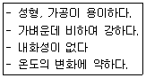
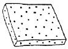
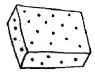
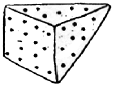
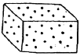
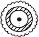
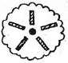
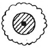
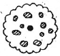
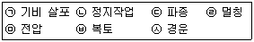

조경기능사 (2008-02-03 기출문제)
1과목: 조경일반
1. 조선시대 사대부나 양반계급에 속했던 사람들이 시골 별서에 꾸민 정원이 아닌 것은?
- 양산보의 소쇄원
- 윤선도의 부용동정원
- 정약용의 다산초당
- 이규보의 사륜정
(정답률: 75%)

2. 다음 중 골프 코스 중 티와 그린 사이에 짧게 깎은 페어웨이 및 러프 등에서 가장 이용이 많은 잔디로 적합한 것은?
- 들잔디
- 벤트그라스
- 버뮤다그라스
- 라이그라스
(정답률: 59%)
3. 다음 중 서울시내의 남산에 위치한 남산타워는 도시를 구성하는 요소 중 어디에 속하는가?
- 도로(paths)
- 랜드마크(landmark)
- 지역(district)
- 가장자리(edge)
(정답률: 96%)
4. 다음 중 신선사상을 바탕으로 음양오행설이 가미되어 정원 양식에 반영된 것은?
- 한국정원
- 일본정원
- 중국정원
- 인도정원
(정답률: 87%)
5. 다음 중 ‘무리지어 나는 철새’, ‘설경’ 또는 ‘수면에 투영된 영상’ 등에서 느껴지는 경관은?
- 초점경관
- 관개경관
- 세부경관
- 일시경관
(정답률: 90%)
6. 다음 중 스페인정원과 가장 관련이 적은 것은?
- 비스타
- 색채타일
- 분수
- 발코니
(정답률: 68%)
7. 다음 조경미의 요소 중 축(axis)에 대한 설명으로 가장 거리가 먼 것은?
- 축을 사용한 전형적인 예는 프랑스의 베르사유궁전이 있다.
- 축선은 1개 일 때 그 효과가 커서 되도록 2개 이상은 쓰지 않는다.
- 축선 위에는 원로, 캐널, 케스케이드, 병목 등을 설치해서 강조하고 있다.
- 축의 교점에는 분수, 못, 조각상 등을 설치하는 것이 효과적이다.
(정답률: 68%)
8. 19세기 유럽에서 정형식 정원의 의장을 탈피하고 자연 그대로의 경관을 표현하고자 한 조경 수법은?
- 노단식
- 자연풍경식
- 실용주의식
- 회교식
(정답률: 95%)
9. 중국의 시대별 정원 또는 특징이 바르게 연결된 것은?
- 한나라 - 아방궁
- 당나라 - 온천궁
- 진나라 - 이화원
- 청나라 - 상림원
(정답률: 61%)
10. 도시공원 및 녹지 등에 관한 법률에서 규정한 편익시설로만 구성된 공원시설들은?
- 주차장, 매점
- 박물관, 휴게소
- 야외음악당, 식물원
- 그네, 미끄럼틀
(정답률: 82%)
11. 토지이용계획시 일반적인 진행순서로 알맞게 구성된 것은?
- 적지분석 - 토지이용분류 - 종합배분
- 적지분석 - 종합배분 - 토지이용분류
- 토지이용분류 - 종합배분 - 적지분석
- 토지이용분류 - 적지분석 - 종합배분
(정답률: 53%)
12. 다음 중 사람이 쾌적함을 느낄 수 있는 상대습도의 범위는?
- 20 ~ 30%
- 40 ~ 50%
- 60 ~ 70%
- 70 ~ 80%
(정답률: 59%)
13. 다음 중 경관요소에 따른 지각 강도가 다른 하나는?
- 흰색
- 대각선
- 차가운 색채
- 동적인 상태
(정답률: 38%)
14. 다음 중 계획단계에서 자연환경 조사 사항과 가장관계가 없는 것은?
- 식생
- 주변 교통량
- 기상조건
- 토양조사
(정답률: 86%)
15. 제도 후 도면의 표제란에 기재하지 않아도 되는 것은?
- 도면명
- 도면번호
- 제도장소
- 축척
(정답률: 92%)
2과목: 조경재료
16. 다음 중 옻나무와 관련된 설명 중 가장 거리가 먼 것은?
- 열매는 핵과로 편원형이며 연한 황색으로 10월에 익는다.
- 주로 숫나무가 암나무 보다 옻액이 많이 생산된다.
- 독립생장한 나무가 밀집생장한 나무보다 옻액이 많이 생산된다.
- 표피가 울퉁불퉁한 나무가 부드러운 나무 보다 옻 액이 많이 생산된다.
(정답률: 63%)
17. 다음 중 서양식 정원에서 많이 쓰이는 디딤돌 놓기 수법은 어느 것인가?
- 직선타(直線打)
- 삼연타(三連打)
- 사삼타(四三打)
- 천조타(千鳥打)
(정답률: 69%)
18. 다음 중 보도 포장재료로서 적당치 않은 것은?
- 내구성이 있을 것
- 자연 배수가 용이할 것
- 보행시 마찰력이 전혀 없을 것
- 외관 및 질감이 좋을 것
(정답률: 92%)
19. 다음 중 낙엽 활엽 관목으로만 짝지어진 것은?
- 동백나무, 섬잣나무
- 회양목, 아왜나무
- 생강나무, 화살나무
- 느티나무, 은행나무
(정답률: 70%)
20. 석재 중 경석의 겉보기 비중으로 가장 적당한 것은?
- 약 1.0 ~ 1.5
- 약 1.6 ~ 2.4
- 약 2.5 ~ 2.7
- 약 3.0 ~ 4.6
(정답률: 59%)
21. 다음 중 수형은 무엇에 의해 이루어 지는가?
- 줄기 + 뿌리
- 잎 + 가지
- 수관 + 줄기
- 흉고직경
(정답률: 71%)
22. 다음과 같은 특징을 가진 것은?

- 목질제품
- 플라스틱제품
- 금속제품
- 유리질제품
(정답률: 89%)
23. 다음 중 목본성인 지피식물로 가장 적당한 것은?
- 송악
- 금매화
- 비비추
- 송엽국
(정답률: 61%)
24. 생물재료의 특성으로 맞는 것은?
- 균일성
- 불변성
- 자연성
- 가공성
(정답률: 87%)
25. 다음 중 붉은색 계통의 단풍이 드는 나무가 아닌 것은?
- 백합나무
- 벚나무
- 화살나무
- 검양옻나무
(정답률: 57%)
26. 목재를 건조하는 목적에 관한 설명으로 가장 거리가 먼 것은?
- 변색, 부패 방지하기 위하여
- 탄성과 강도를 낮추기 위하여
- 가공하기 쉽게 하기 위하여
- 접착이나 칠이 잘 되게 하기 위하여
(정답률: 87%)
27. 다음 중 도로 비탈면 녹화복원공법에 사용되는 재료가 아닌 것은?
- 식생자루
- 식생매트
- 잔디블록
- 우드 칩(wood-chip)
(정답률: 82%)
28. 다음 중 척박지에 잘 견디는 수종으로만 짝지워진 것은?
- 왕벚나무, 가중나무
- 물푸레나무, 버드나무
- 느티나무, 향나무
- 소나무, 자작나무
(정답률: 68%)
29. 다음 중 일반적으로 수종의 수명이 가장 긴 것은?
- 왕벚나무
- 수양버들
- 능수버들
- 느티나무
(정답률: 83%)
30. 다음 여러 가지 규격재 모양 중 마름돌에 해당하는 것은?




(정답률: 75%)
31. 시멘트 중 간단한 구조물에 가장 많이 사용되는 것은?
- 보통포틀랜드시멘트
- 중용열포틀랜드시멘트
- 조강포틀랜드시멘트
- 고로시멘트
(정답률: 88%)
32. 다음 중 수목의 이용상 단풍의 아름다움을 관상하려 할 때 식재할 수 없는 수종은?
- 단풍나무
- 화살나무
- 칠엽수
- 아왜나무
(정답률: 56%)
33. 다음 중 인공폭포, 인공바위 등의 조경시설에 쓰이는 일반적인 재료로 가장 적당한 것은?
- PVC
- 비닐
- 합성수지
- FRP
(정답률: 89%)
34. 다음 중 수목의 굴취시에 근원직경을 측정하는 수종으로만 짝지어진 것은?
- 산수유, 산딸나무
- 잣나무, 측백나무
- 버즘나무, 은단풍
- 은행나무, 소나무
(정답률: 50%)
35. 다음 수목 가운데 양수에 해당하는 것은?
- 주목
- 전나무
- 곰솔
- 동백나무
(정답률: 58%)
3과목: 조경 시공 및 관리
36. 소형 고압 블록 시공시 하중, 강도 등을 고려하여 보도용으로 설치되는 블록의 두께로 가장 적합한 것은?
- 2cm
- 4cm
- 6cm
- 8cm
(정답률: 72%)
37. 다음 정원시공 중 가장 늦게 하는 마무리 단계의 공사는?
- 터닦기 공사
- 콘크리트 공사
- 정원 시설물 공사
- 식재 공사
(정답률: 91%)
38. 뿌리돌림은 현재의 생장지에서 적당한 범위로 뿌리를 절단하는 것을 말하는데 이 뿌리돌림에 관한 설명으로 틀린 것은?
- 한 장소에서 오랫동안 자랄 때 뿌리는 줄기로부터 상당히 떨어진 곳까지 굵은 뿌리가 뻗어 나가며, 잔 뿌리는 그 곳에 분포되어 있다.
- 제한된 뿌리분으로 캐서 이식할 경우 잔 뿌리는 대부분 끊겨 나가고 굵은 뿌리만 남아 이식시 활착이 어렵다.
- 뿌리돌림을 하는 시기는 일 년 내내 가능하고, 봄철보다 여름철이 끝나는 시기가 가장 좋으며, 낙엽수는 가을철이 적당하다.
- 봄에 뿌리돌림을 한 낙엽수는 당년 가을이나 이듬해 봄에, 상록수는 이듬해 봄이나 장마기에 이식할 수 있다.
(정답률: 73%)
39. 자연석 무너짐 쌓기 방법의 설명으로 가장 거리가 먼 것은?
- 기초가 될 밑돌은 약간 큰 돌을 사용해서 땅속에 20 ~ 30cm정도 깊이로 묻는다.
- 제일 윗부분에 놓는 돌은 돌의 윗부분이 모두 고저차가 크게 나도록 놓는다.
- 돌과 돌이 맞물리는 곳에는 작은 돌을 끼워 넣지 않는다.
- 돌을 쌓고 난 후 돌과 돌 사이의 틈에는 키가 작은 관목을 식재한다.
(정답률: 79%)
40. 자연상태에서 굵은 가지를 전정하지 않는 것이 가장 좋은 수종은?
- 매화나무
- 배롱나무
- 벚나무
- 능소화
(정답률: 84%)
41. 작성이 간단하며 공사 진행 결과나 전체 공정 중 현재 작업의 상황을 명확히 알 수 있어 공사규모가 작은 경우에 많이 사용되고, 시급한 공사도 많이 적용되는 공정표의 표시 방법은?
- 막대그래프
- 곡선그래프
- 네트워크 방식
- 대수도표
(정답률: 81%)
42. 설계 도면에 표시하기 어려운 재료의 종류나 품질, 시공방법, 재료 검사 방법 등에 대해 충분히 알 수 있도록 글로 작성하여 설계상의 부족한 부분을 규정 보충한 문서는?
- 일위대가표
- 설계 설명서
- 시방서
- 내역서
(정답률: 84%)
43. 잔디 식재지 표토의 최소 토심(생육 최소 깊이)으로 가장 적합한 것은?
- 10cm
- 20cm
- 30cm
- 45cm
(정답률: 75%)
44. 다음 중 선의 모양에 따라 구분하는 선의 종류가 나머지와 다른 것은?
- 실선
- 파선
- 굵은선
- 쇄선
(정답률: 62%)
45. 다음 중 화단의 꽃 심기 작업 설명으로 틀린 것은?
- 바람이 없고 흐린 날 심는다.
- 비교적 큰 면적의 화단은 중심부에서 바깥쪽으로 심어 나간다.
- 식재한 화초에 그늘이 지도록 작업자는 태양을 등지고 심어 나간다.
- 묘를 심은 다음 발로 꼭 밟아준다.
(정답률: 67%)
46. 다음 중 수목의 식재 후 관리사항으로 필요 없는 것은?
- 전정
- 뿌리돌림
- 가지치기
- 지주세우기
(정답률: 91%)
47. 이식할 수목의 가식장소와 그 방법의 설명으로 틀린 것은?(오류 신고가 접수된 문제입니다. 반드시 정답과 해설을 확인하시기 바랍니다.)
- 공사의 지장이 없는 곳에 감독관의 지시에 따라 가식 장소를 정한다.
- 그늘지고 점토질 성분이 풍부한 토양을 선택한다.
- 나무가 쓰러지지 않도록 세우고 뿌리분에 흙을 덮는다.
- 필요한 경우 관수시설 및 수목 보양시설을 갖춘다.
(정답률: 78%)
48. 일반적인 전정시기와 횟수에 관한 설명으로 틀린 것은?
- 침엽수는 10 ~ 11월경이나 2 ~ 3월에 한 번 실시 한다.
- 상록활엽수는 5 ~ 6월과 9 ~ 10월경 두 번 실시 한다.
- 낙엽수는 일반적으로 11 ~ 3월 및 7 ~ 8월경에 각각 한번씩 두 번 전정한다.
- 관목류는 일반적으로 계절이 변할 때마다 전정하는 것이 좋다.
(정답률: 77%)
49. 조경 공사용 기계인 백호(back hoe)에 대한 설명 중 틀린 것은?
- 이용 분류상 굴착용 기계이다.
- 굳은 지반이라도 굴착할 수 있다.
- 기계가 놓인 지면보다 높은 곳을 굴착하는데 유리하다.
- 버킷(bucket)을 밑으로 내려 앞쪽으로 긁어 올려 흙을 깎는다.
(정답률: 82%)
50. 다음 중 설계도면을 작성할 때 치수선, 치수보조선에 이용되는 선의 종류는?
- 1점 쇄선
- 2점 쇄선
- 파선
- 실선
(정답률: 74%)
51. 1 m3 토량에 대한 운반 품셈을 1일당 0.2인으로 할 때 2인의 인부가 100m3 흙을 운반하려면 얼마가 필요한가?
- 5일
- 10일
- 40일
- 50일
(정답률: 70%)
52. 다음 공사의 순공사 원가를 구하면 얼마인가?(단, 재료비 : 4000원, 노무비 : 5000원, 총경비 : 1000원, 일반관리비 : 600원 이다.)
- 9000원
- 10000원
- 10600원
- 6000원
(정답률: 69%)
53. 다음 중 일반적으로 빗물받이는 배수관 몇 m 마다 1개씩 설치하는 것이 이상적인가?
- 5m
- 20m
- 40m
- 100m
(정답률: 82%)
54. 수목의 밑동으로부터 밖으로 방사상 모양으로 땅을 파고 거름을 주는 방법은?




(정답률: 90%)
55. 다음 중 수목의 생장을 촉진하기 위하여 살포하는 생장 조절제는?
- 부타클로르ㆍ에톡시설퓨론입제(풀제로)
- 리뉴론수화제(아파론)
- 아토닉액제(삼공아토닉)
- 글리포세이트액제(근사미)
(정답률: 53%)
56. 다음 [보기]의 잔디종자 파종작업들을 순서대로 바르게 나열한 것은?

- ㉦ → (ㄱ) → (ㄴ) → (ㄷ) → ㉥ → (ㅁ) → (ㄹ)
- (ㄱ) → (ㄷ) → (ㄴ) → ㉥ → (ㄹ) → (ㅁ) → ㉦
- (ㄴ) → (ㄷ) → (ㅁ) → ㉥ → (ㄱ) → (ㄹ) → ㉦
- (ㄷ) → (ㄱ) → (ㄴ) → ㉥ → (ㅁ) → ㉦ → (ㄹ)
(정답률: 83%)
57. 수목의 동해 발생에 관한 설명 중 틀린 것은?(오류 신고가 접수된 문제입니다. 반드시 정답과 해설을 확인하시기 바랍니다.)
- 큰나무 보다는 어린나무에서 많이 발생한다.
- 건조한 토양에서 보다 과습한 토양에서 많이 발생한다.
- 늦은 가을과 이른 봄에 많이 발생한다.
- 일교차가 심한 북쪽 경사면 보다 일교차가 심한 남쪽 경사면에서 피해가 많이 발생한다.
(정답률: 61%)
58. 주로 한국 잔디류에 가장 많이 발생하는 병은?
- 브라운 패취
- 녹병
- 핑크 패취
- 달라스팟
(정답률: 90%)
59. 다음 수종 중 흰가루병이 가장 잘 걸리는 식물은?
- 대추나무
- 향나무
- 동백나무
- 장미
(정답률: 63%)
60. 지형도에서 U자(字)모양으로 그 바닥이 낮은 높이의 등고선을 향하면 이것은 무엇을 의미하는가?
- 계곡
- 능선
- 현애
- 동굴
(정답률: 80%)